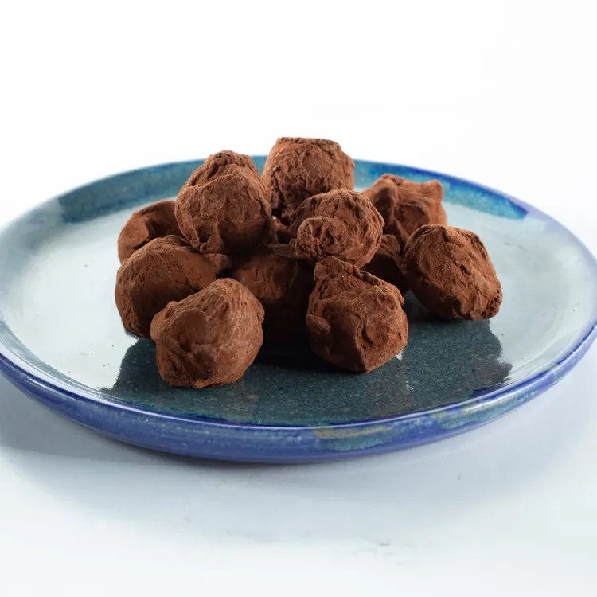
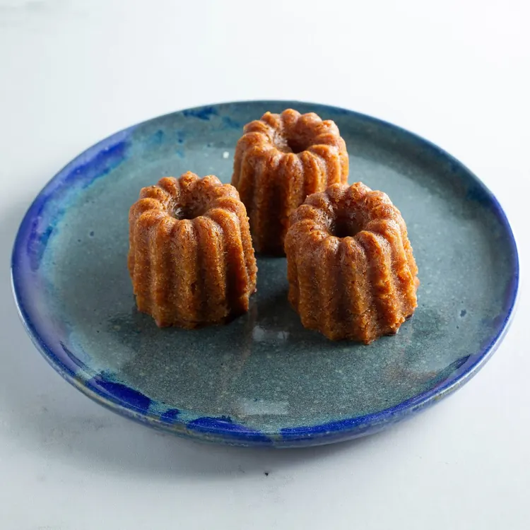

Bonjour from Green Streetevery day
iD Éclair, dressed for the day at 169 W Green St
Plant-based French pâtisserie, from 6 am.

Du moment
Dark chocolate truffles
200 g box, an orange note
Three from the case
Three favourites at the shop’s own prices.

Cannelés, by 3
Caramelised crust, soft centre
$9.00Live storeChocolate éclair
Glossy chocolate glaze, gold leaf
$6.50Butter croissant
Laminated with plant butter
$4.50
A box of six, and a time to collect it
Six macarons for $15.00. The earliest pickup is already chosen.
Box of six macarons
$15.00Pickup
Gifts that keep, for any occasion
On the live store today, ready in about 24 hours.
Dark chocolate truffles
200 g box, an orange note
$15.00Live store
Chocolat mon amour
Chocolate crumble, ganache and mousse; in a jar
$8.00Live store
Gift basket, small
Seasonal jam, diamants, two poché cookies, a meringue
$45.00Live storeRaspberry jam
Raspberry, sugar, pectin; light in sugar
$7.95Live store
The case through the year
The shop dresses for the season, from Halloween to the winter holidays and on through 2027. The pastries and prices stay the same in every look.
All 25 looks, with their dates
Answers first
Does the menu change with the season’s look?
No. The colours and the drawing on the case change with the season; the pastries, the prices and the pickup times stay the same.
Is everything plant-based?
Yes. Every pastry, cake, jar and drink in the shop is 100% plant-based, in every season.